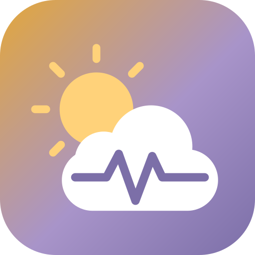
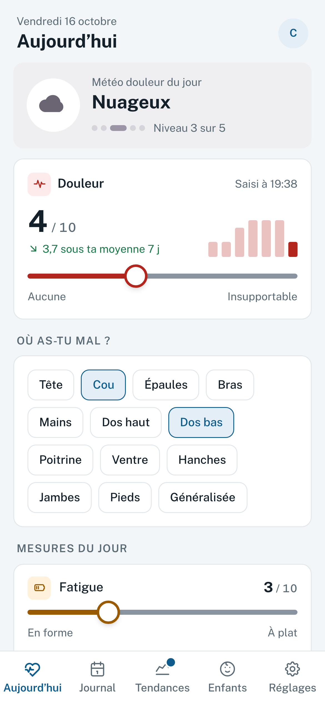
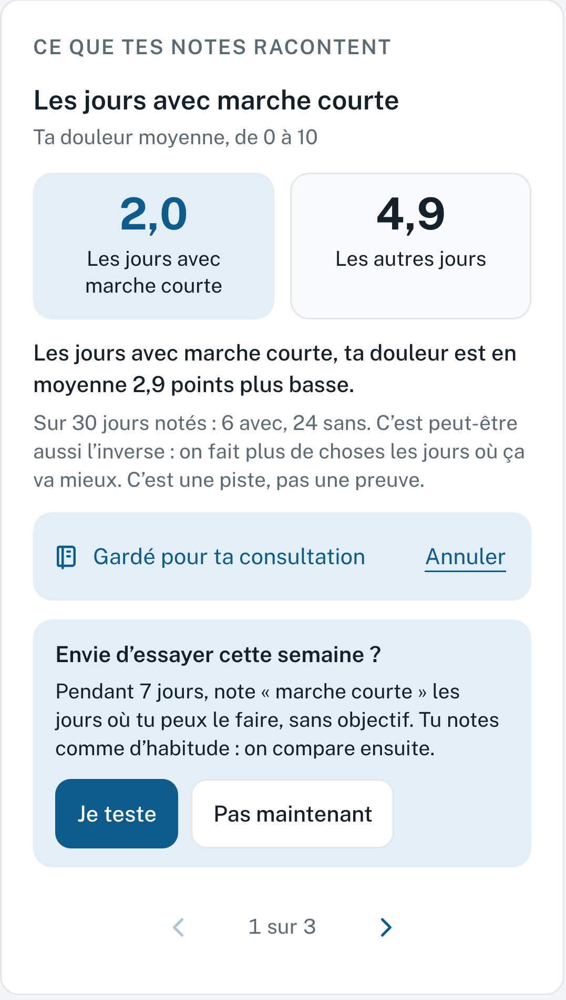
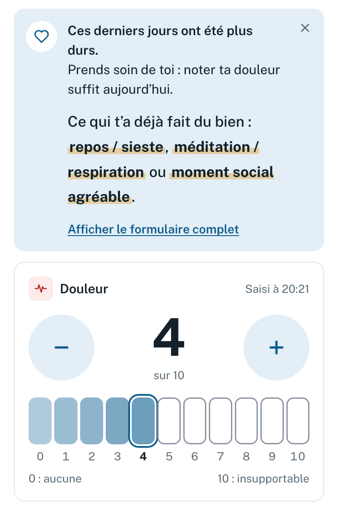

OUCHOUCH est un carnet pour la fibromyalgie et les autres douleurs chroniques. Tu notes ta journée en moins d’une minute. Au fil des semaines, tes notes montrent ce qui semble aggraver ta douleur et ce qui t’aide, pour que tu puisses agir dessus.

Sommeil, stress, activité de la veille : OUCH compare tes jours et te montre ce qui revient quand ça va moins bien. Une piste à la fois, avec les jours derrière.
Une marche courte, un bain chaud, des étirements… ce que tu as noté comme t’ayant fait du bien, avec tes jours avec et sans côte à côte.
Une piste te parle ? Lance un essai : tu notes comme d’habitude, et OUCH compare tes jours avec et sans. Ça ne prouve rien, mais ça aide à y voir plus clair.
Les pistes que tu gardes passent dans le rapport (2 pages, ou 5 pour un centre douleur), avec ta courbe et tes traitements. Il décrit tes données, sans conclure à ta place.
Quand ça va mal, l’écran se réduit à la douleur. Un chiffre suffit : le suivi tient quand même.


À repérer ce qui aggrave ta douleur et ce qui t’aide, pour agir dessus et en parler à ton médecin. OUCH te montre des pistes tirées de tes notes, et tu peux les essayer une semaine pour voir.
Moins d’une minute : un chiffre de 0 à 10 suffit. Le reste est facultatif, et l’écran se réduit les jours difficiles.
Gratuit, sans abonnement ni pub, et sans compte. Le code est ouvert : n’importe qui peut le relire.
Elles restent sur ton téléphone, sauf si tu actives la météo automatique ou la sauvegarde Dropbox (en essai). Un verrou par code est possible.
Tu exportes une sauvegarde chiffrée avec un mot de passe à toi, puis tu l’importes sur le nouveau. L’app te rappelle régulièrement de faire une sauvegarde.
Non. Tu l’ouvres dans le navigateur, puis « Ajouter à l’écran d’accueil ». Ensuite, il marche aussi sans connexion.
Non. OUCH décrit tes notes, il ne diagnostique rien. Une piste peut aussi s’expliquer à l’envers : on bouge plus les jours où ça va mieux.
Un onglet leur explique ta journée avec des mots simples (« le ciel de maman est un peu voilé »), pour trois âges : 4–7, 8–12, 13–17 ans.
Lance le mode démo : 90 jours fictifs et une visite guidée. Tu vois tout, sans rien saisir.
Oui, et le rapport aussi. Tu changes de langue quand tu veux.
Ouvre le lien, puis choisis « Découvrir avec un exemple ». Rien à installer, rien à créer.